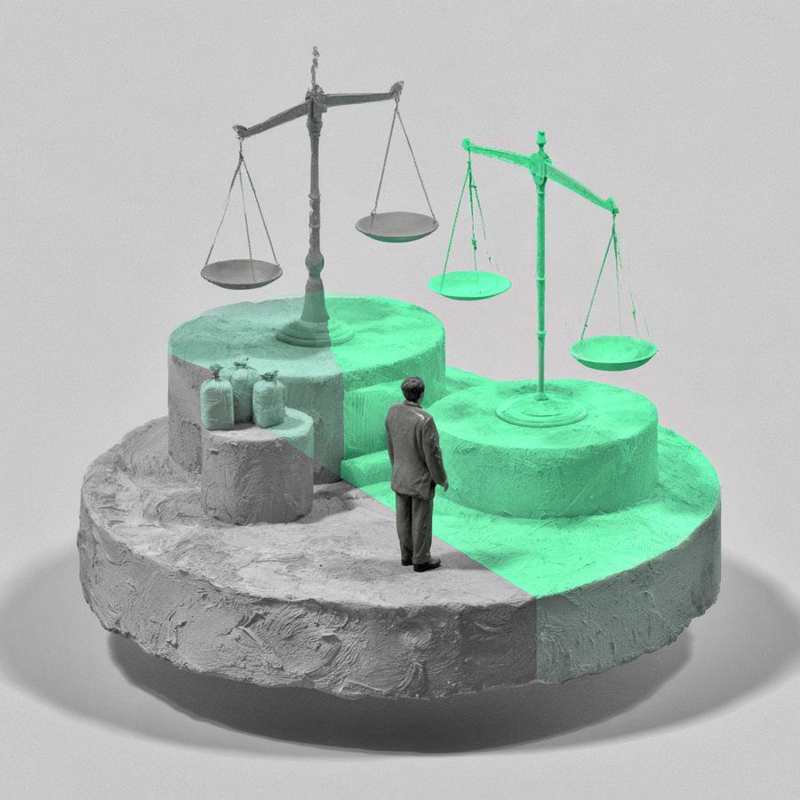

마약 범죄 일부 무죄 및 집행유예 판결
A(의뢰인)는 공범인 B로부터 마약을 수수하고, 투약하였는데, B는 마약을 A에게 교부한 사실이 없다고 주장하였고, A는 수사단계에서는 B로부터 마약을 수수한 사실이 없다고 주장하여다가 법정에서는 마약을 수수하였다는 취지로 진술을 번복하였습니다. 법원은, A가 B로부터 마약을 매매하였는지 여부에 관하여, A와 B의 진술의 차이, A의 진술의 일관성이 없는 점을 근거로 A와 B에게 무죄를 선고하였습니다.

고소・수사
—
일부 무죄 및 집행유예
사건 개요
A(의뢰인)는 공범인 B로부터 마약을 수수하고, 투약하였는데, B는 마약을 A에게 교부한 사실이 없다고 주장하였고, A는 수사단계에서는 B로부터 마약을 수수한 사실이 없다고 주장하여다가 법정에서는 마약을 수수하였다는 취지로 진술을 번복하였습니다. A는 마약을 B로부터 마약을 수수하면서 대가를 지급하지 않았으므로 매매는 아니라고 주장하였습니다.
본 변호사의 전략 변호사 김용석
A의 마약 투약과 관련하여, 일부 투약에 대해서는 모발검사와 상이하므로 무죄를 주장하였고, B로부터 교부받은 부분과 관련해서는 A와 B의 진술의 차이를 주장하여 무죄를 주장하였습니다. 나머지 마약 투약사실, 마약 교부사실에 대해서는 모발검사의 내용에 따라 인정하고, 마약중독 치료를 적극적으로 받겠다는 취지로 주장하였습니다.
결과 및 판단
법원은, A가 B로부터 마약을 매매하였는지 여부에 관하여, A와 B의 진술의 차이, A의 진술의 일관성이 없는 점을 근거로 A와 B에게 무죄를 선고하였습니다. 그리고, A는 초범이고, 마약 치료 의사를 적극적으로 표시하고 실제로 치료를 받고 있는 점 등을 고려하여 집행유예 판결을 선고하였습니다.
법률 인사이트
마약범죄의 경우, 모발, 소변 감정결과가 가장 중요한 증거이며, 그 외의 증거는 대부분이 진술증거입니다. 진술증거의 경우 일관성이 없는 경우 그 증거가치가 떨어지므로, 그 진술의 신빙성을 다투어야 합니다.